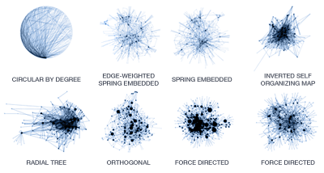
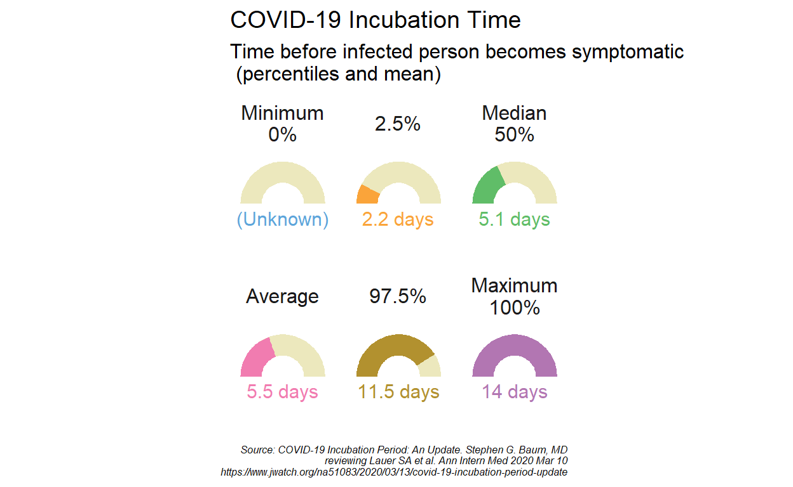
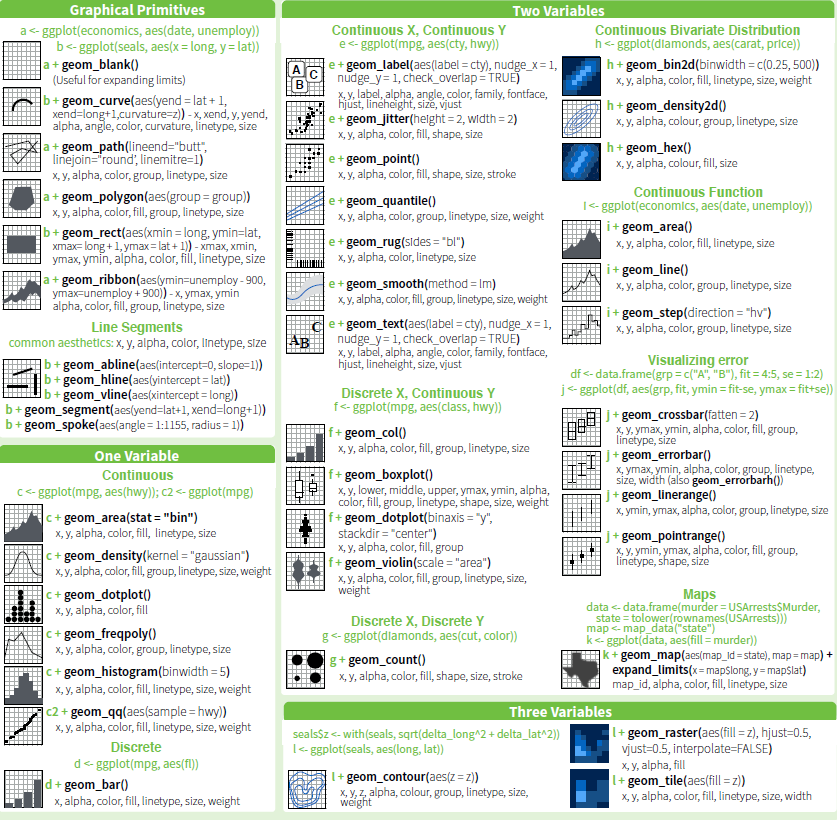
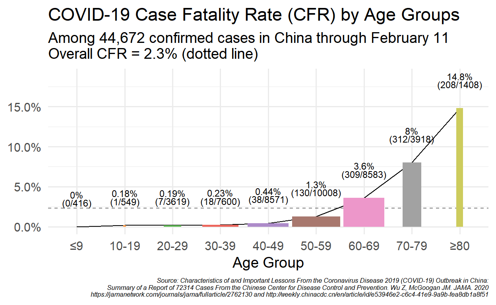
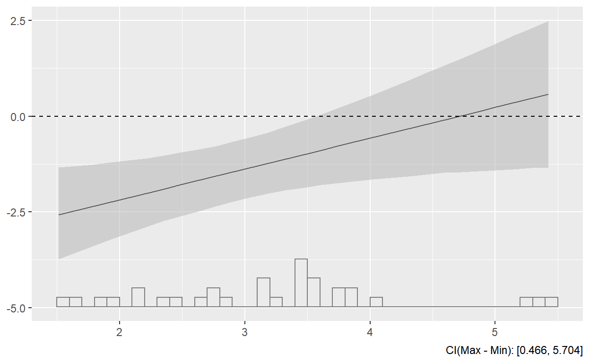
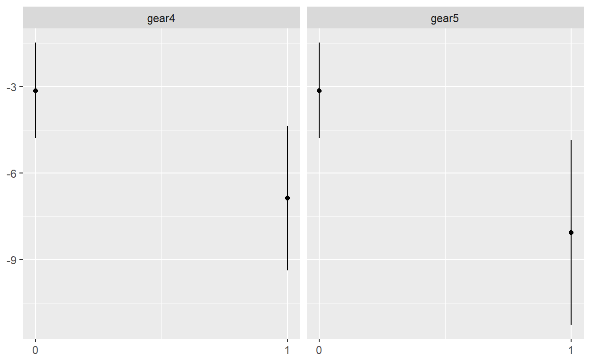
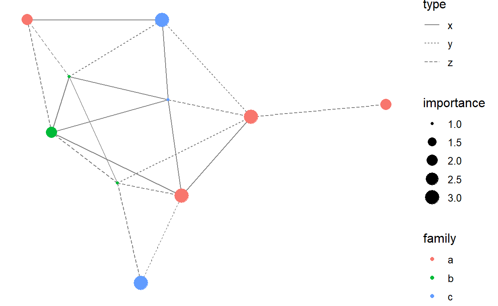

Lecture IV: Basic Data Visualization
A Picture Worths a Thousand Words

When You Are a Professional R Visualizer…
Networks

Maps
Interactive plots

Skill

Abilities You’ll Achieve
- Draw basic and
ggplotcharts. - Read complex
ggplotcodes.
R’s Visualization System
- Basic plots:
plot(). - Lattice plots: e.g.,
ggplot(). - Interactive plots:
shiny()(Not for today)
Basic Plot
Pro:
- Embedded in R
- Good tool for data exploration.
- Spatial analysis and 3-D plots.
Con:
- Not very pretty
- Not very flexible
Example
hist(mtcars$mpg)Saving the output
- Compatible format:
.jpg,.png,.wmf,.pdf,.bmp, andpostscript. - Process: 1. call the graphic device 2. plot 3. close the device
png("<working directory>/histgraph.png")
hist(mtcars$mpg)
dev.off()ggplot
Built based on Leland Wilkinson’s Grammar of Graphics.
- To use
ggplotfunction, you need anothertidyversepackage:ggplot2.
Two Stuffs You Need to Know Ahead
aes: Aesthetic, color, shape, size- Properties that can be perceived on the graphic.
- Each aesthetic can be mapped to a variable, or set to a constant value
geom_: Geometric, points, lines, bars- Over forty types

Case Fatality Rate

Step by Step
if (!require(ggplot2)) install.packages("ggplot2")
if (!require(scales)) install.packages("scales")
if (!require(ggthemes)) install.packages("ggthemes")
library(ggplot2)
library(scales)
library(ggthemes)
ggplot(data = cfr_china,
aes(x = age, y = cfr, group = 1))ggplot(data = cfr_china,
aes(x = age, y = cfr, group = 1)) +
geom_bar(aes(width = cases / 10000, fill = age),
stat = "identity",
position = "identity") +
geom_hline(yintercept = 0.01 * 2.3,
linetype = "dashed",
alpha = 0.5) +
geom_line() +
geom_text(
aes(label = paste0(cfr * 100, "%")),
family = "Palatino",
size = 3,
nudge_y = 0.04
) +
geom_text(
aes(label = paste0("(", deaths, "/", cases, ")")),
family = "Palatino",
size = 3,
nudge_y = 0.03
) +
scale_y_continuous(labels = percent) +
scale_fill_tableau(palette = "Classic 10 Medium") +
labs(
title = "COVID-19 Case Fatality Rate (CFR) by Age Groups",
subtitle = "Among 44,672 confirmed cases in China through February 11\nOverall CFR = 2.3% (dotted line)",
x = "Age Group",
y = NULL,
caption = "Source: Characteristics of and Important Lessons From the Coronavirus Disease 2019 (COVID-19) Outbreak in China:\nSummary of a Report of 72314 Cases From the Chinese Center for Disease Control and Prevention. Wu Z, McGoogan JM. JAMA. 2020\nhttps://jamanetwork.com/journals/jama/fullarticle/2762130 and http://weekly.chinacdc.cn/en/article/id/e53946e2-c6c4-41e9-9a9b-fea8db1a8f51"
) +
theme_minimal(base_size = 14, base_family = "Palatino") +
theme(plot.caption = element_text(face = "italic", size = 6),
legend.position = "none")data: The data that you want to visualizeaes: Aesthetic mappingsgeoms: Geometric objectslabs:title, subtitle: Titlesx, y: Axis labelscaption: Notes
stats: Statistics transformationsscales: relate the data to the aestheticcoord: a coordinate system that describes how data coordinates are mapped to the plane of the graphic.facet: a faceting specification describes how to break up the data into sets.
theme: background
Saving the output
ggsave(<plot project>, "<name + type>"):- When the
<plot project>is omitted, R will save the last presented plot. - There are additional arguments which users can use to adjust the size, path, scale, etc.
- When the
ggsave("cfr.png")COVID-19 Incubation Time

Steps
ggplot(incubation_data,
aes(
ymax = svalue,
ymin = 0,
xmax = 2,
xmin = 1,
fill = sname
)) ggplot(incubation_data,
aes(
ymax = svalue,
ymin = 0,
xmax = 2,
xmin = 1,
fill = sname
)) +
geom_rect(aes(
ymax = 14,
ymin = 0,
xmax = 2,
xmin = 1
), fill = "#ece8bd") +
geom_rect() +
coord_polar(theta = "y", start = -pi / 2) +
xlim(c(0, 2)) + ylim(c(0, 28)) +
scale_fill_few(palette = "Medium") +
scale_color_few(palette = "Medium") +
geom_text(aes(
x = 0,
y = 0,
label = stext,
colour = sname
),
size = 4,
family = "Palatino") +
facet_wrap( ~ sname, ncol = 3) +
guides(fill = FALSE, colour = FALSE) +
labs(
title = "COVID-19 Incubation Time",
subtitle = "Time before infected person becomes symptomatic\n(percentiles and mean) ",
caption = "Source: COVID-19 Incubation Period: An Update. Stephen G. Baum, MD\n reviewing Lauer SA et al. Ann Intern Med 2020 Mar 10\nhttps://www.jwatch.org/na51083/2020/03/13/covid-19-incubation-period-update",
x = NULL,
y = NULL
) +
theme_tufte(ticks = FALSE,
base_size = 12,
base_family = "Palatino") +
theme(
axis.text = element_blank(),
plot.caption = element_text(face = "italic", size = 6),
strip.text = element_text(size = 12)
)Specific Charts
- Likers
- Coefficients
- Interactions
- Map
Likert-Scale Index
df_likert
if (!require(likert)) install.packages("likert")
library(likert)
likert(df_likert) %>%
plot(type = "bar")likert(df_likert) %>%
plot(
type = "heat",
low.color = "white",
high.color = "blue",
text.color = "black",
text.size = 4,
wrap = 50
)
likert(df_likert) %>%
plot(type = "density",
facet = TRUE,
bw = 0.5)Regression Results
Coefficient visualization
dotwhisker
m1 <- lm(mpg ~ cyl + hp + wt, data = mtcars)if (!require(dotwhisker)) install.packages("dotwhisker")
library(dotwhisker)
dwplot(m1)Multiple models
m2 <- lm(mpg ~ cyl + hp + wt + hp, data = mtcars)
m3 <- lm(mpg ~ cyl + hp + wt + hp + am, data = mtcars)
dwplot(list(m1, m2, m3))dwplot(list(m1, m2, m3)) %>%
relabel_predictors(
c(
wt = "Weight",
cyl = "Cylinders",
disp = "Displacement",
hp = "Horsepower",
gear = "Gears",
am = "Manual"
)
) +
theme_bw() + xlab("Coefficient Estimate") + ylab("") +
geom_vline(xintercept = 0,
colour = "grey60",
linetype = 2) +
ggtitle("Predicting Gas Mileage") +
theme(
plot.title = element_text(face = "bold"),
legend.justification = c(0, 0),
legend.position = c(0, 0),
legend.background = element_rect(colour = "grey80"),
legend.title = element_blank()
) Comparing in their own scales.
small_multiple(list(m1, m2, m3)) +
ylab("Coefficient Estimate") +
geom_hline(yintercept = 0,
colour = "grey60",
linetype = 2) +
ggtitle("Predicting Gas Mileage") +
theme(
plot.title = element_text(face = "bold"),
legend.position = "none",
axis.text.x = element_text(angle = 60, hjust = 1)
) Moderation effects
interplot
Visualizing the changes in the coefficient of one variable in a two-way interaction term conditional on the value of the other included variable.
- You can’t correctly explain interactions with table!
- Model: \[Y = \beta_0 + \beta_1X + \beta_2Z + \beta_3X\times Z + \varepsilon.\]
- Effect: \[\frac{\partial Y}{\partial X} = \beta_1 + \beta_3Z.\]
- Standard error: \[\hat{\sigma}_{\frac{\partial Y}{\partial X}} = \sqrt{var(\hat{\beta_1}) + Z^2var(\hat{\beta_3}) + 2Zcov(\hat{\beta_1}, \hat{\beta_3})}.\]
- How can you tell if the change is significant?
- Most precise way: calculate the difference between two mean with SEs.
- Most convenient way: visualizing it
Plotting moderation
m_cyl <- lm(mpg ~ wt * cyl, data = mtcars)
summary(m_cyl)if (!require(interplot)) install.packages("interplot")
library(interplot)
interplot(m = m_cyl, var1 = "cyl", var2 = "wt")
interplot(m = m_cyl, var1 = "wt", var2 = "cyl")Significant?
interplot(m = m_cyl, var1 = "cyl", var2 = "wt", hist = TRUE) +
geom_hline(yintercept = 0, linetype = "dashed")
Category comparison
mtcars$gear <- factor(mtcars$gear)
m_gear <- lm(mpg ~ gear * wt, data = mtcars)
interplot(m = m_gear, var1 = "wt", var2 = "gear")
Geographic Visualization
if (!require(ggmap)) install.packages("ggmap")
library(ggmap)
china <- c(left = 72, bottom = 0, right = 135, top = 52)
get_stamenmap(china, zoom = 5, maptype = "toner-lite") %>%
ggmap() 
More information about mapping China, see Jie Zhang’s post.
Network Visualization
if (!require(network)) install.packages("network")
if (!require(sna)) install.packages("sna")
library(network)
library(sna)
n <- network(rgraph(10, tprob = 0.2), directed = FALSE)
n %v% "family" <- sample(letters[1:3], 10, replace = TRUE)
n %v% "importance" <- sample(1:3, 10, replace = TRUE)
e <- network.edgecount(n)
set.edge.attribute(n, "type", sample(letters[24:26], e, replace = TRUE))
set.edge.attribute(n, "day", sample(1:3, e, replace = TRUE))
if (!require(ggnetwork)) install.packages("ggnetwork")
library(ggnetwork)
ggplot(n, aes(x = x, y = y, xend = xend, yend = yend)) +
geom_edges(aes(linetype = type), color = "grey50") +
geom_nodes(aes(color = family, size = importance)) +
theme_blank()
Bonus: Tables
summary(m1); summary(m2); summary(m3)
if (!require(modelsummary)) install.packages("modelsummary")
library(modelsummary)msummary(list(m1, m2, m3),
stars = TRUE,
title = gt::md('This is *the* title'),
subtitle = 'And a subtitle',
notes = list('A first note', gt::md('A **bold** note'))) %>%
tab_style(style = cell_fill(color = "lightcyan"),
locations = cells_body(columns = vars(`Model 2`), rows = 3:4)
)Output Format
msummary(models, filename = 'table.tex')
msummary(models, filename = 'table.rtf')
msummary(models, filename = 'table.html')
msummary(models, filename = 'table.jpeg')
msummary(models, filename = 'table.png')Take-Home Points
- R is power on visualization.
- Pretty ∝ complexity.
- The fancier is unnecessarily the better.